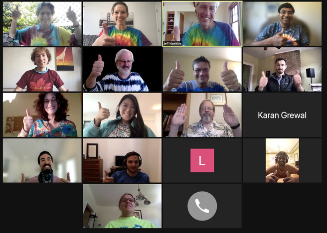

The Matt Taylor Disk Optimizer - TaylorDo
|
Download ZIP File
Download Executable File |
View On GitHub |
An advanced disk optizer that works out of the box while allowing admins full control of volume and concern management. Temporary terms at end. Help wanted.
Proceed to:
About Matt Taylor
|
This product is dedicated in memory of: Matt Taylor (1978-2020), a dedicated teacher always willing to spend time with his students. |
Engineer by Trade, Scientist by Nature, Artist at Heart" |

The memorial site for Matt can be found here.
Developer comments
I didn't know Matt, but I spent many hours getting to know Matt watching his teaching videos, Q&A and tutorial live streams, HTM School and other work at Numenta. In an effort to closely examine a company and its technology I came to realise what a truly sincere, nice and giving person Matt was. He was a great educator.
He was a rare individual and set an example we could all follow. This app is in part a demonstration to students that in using the simplest of languages levels there is, complex and powerful abstractions can be built.
HTM School
HTM School is a series of educational videos created by former Numenta Open Source Community Manager Matt Taylor (1978-2020). Watch these videos to see detailed visualizations of HTM systems running, and thoughtful breakdowns of the biological algorithms involved.
This series was designed for a general audience to be viewed in order, but feel free to jump into any episode. There is no need to have a background in neuroscience, mathematics, or computer science to understand HTM Theory. For those of you wanting more detailed resources on this subject, please have a look at Numenta’s technical papers.
Thoughts on Matt from the HTM community

HTM School with Matt on YouTube.
Remembering Matt at Numenta
(Shared by Christy Maver)
At today's team meeting, several of us wore tie-dyed, brightly colored, or NuPIC shirts to honor Matt. We shared stories and some of our favorite memories. Much like when he was alive, there was a lot of laughter shared today. He made an impact on all of us that will continue to live on. Even some of the newer employees who never met him shared their impressions of him, or how they felt like they knew him from watching his videos.
It doesn't seem possible that it's been a year. We miss you, Matt!
May 10, 2021

Matt contributed my own and many people's education. I hope this project will be instructive for students of scriptology.
If you are able might I suggest you donate to the College Fund for Matt's Children.
Matt's family have set up a 529 education fund for his two children. Contributions can be made at https://www.ugift529.com/.
Matt and Trinity's daughter is Romy. Her code is L1E-N7C. Matt and Trinity's son is named Matthew, but he goes by Dean. Dean's Code is 303-Q2X. Please contribute equally if you can.
Others can pursue sponship for their work if they wish.
MIT liscense.
Icons and logo (c 2001) David G. Horsman.
All other photos used with, and subject to, the permission of the provider.